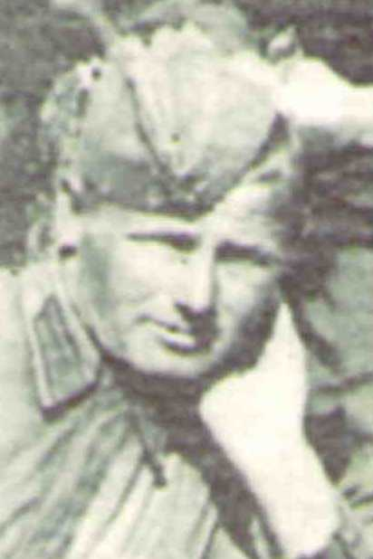

Степочкин Егор Тихонович
Дата рождения1917
Место рожденияНовосибирская обл., с. Ново-Мосино; с. Ново-Мосино Новосибирская обл.; с. Ново-Мосино Новосибирской обл.; с. Ново-Мосино Новоселовский р-н Новосибирская обл.
Место призываАбаканский ГВК Хакасская АО, г. Абакан; Абаканский ГВК Хакасской АО Красноярский край
Место службыАбаканский ГВК
Воинское званиекрасноармеец; рядовой
СудьбаПогиб, 26.07.1941, Московская обл., с. Одинцово, Россия, Московская обл., Одинцовский муниципальный р-н, г. п. Одинцово, 26.07.1941.
Дата выбытия/гибели: 26.07.1941.
Место выбытия/захоронения: Одинцовский муниципальный р-н, г. п. Одинцово
Дата выбытия/гибели: 26.07.1941.
Место выбытия/захоронения: Одинцовский муниципальный р-н, г. п. Одинцово
ИсторияКрасноармеец, 1917, Новосибирская обл., с. Ново-Мосино, Место службы: Абаканский ГВК Хакасская АО, г. Абакан
ID 105283564
ID 105283564